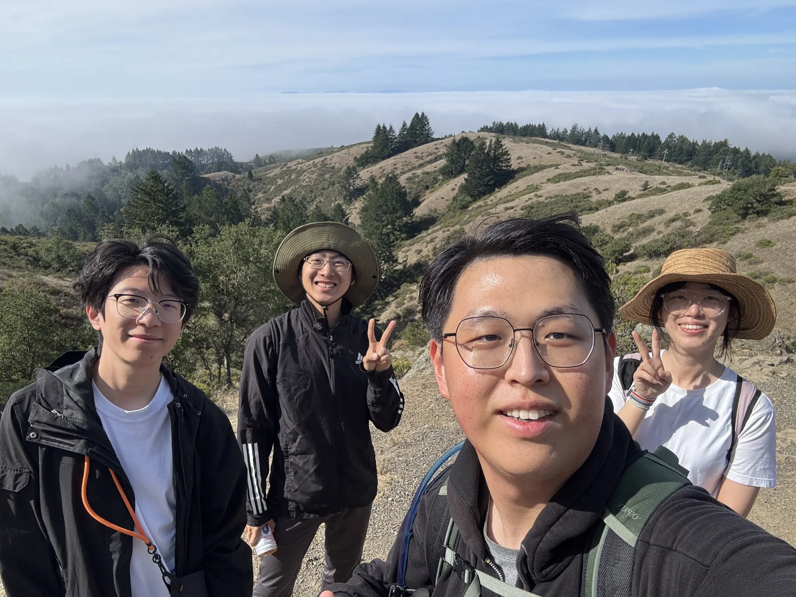
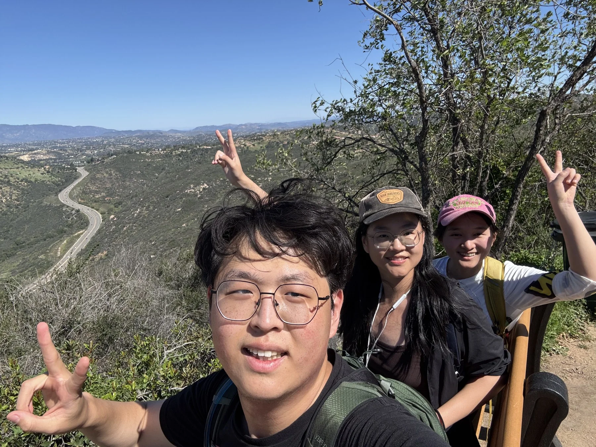
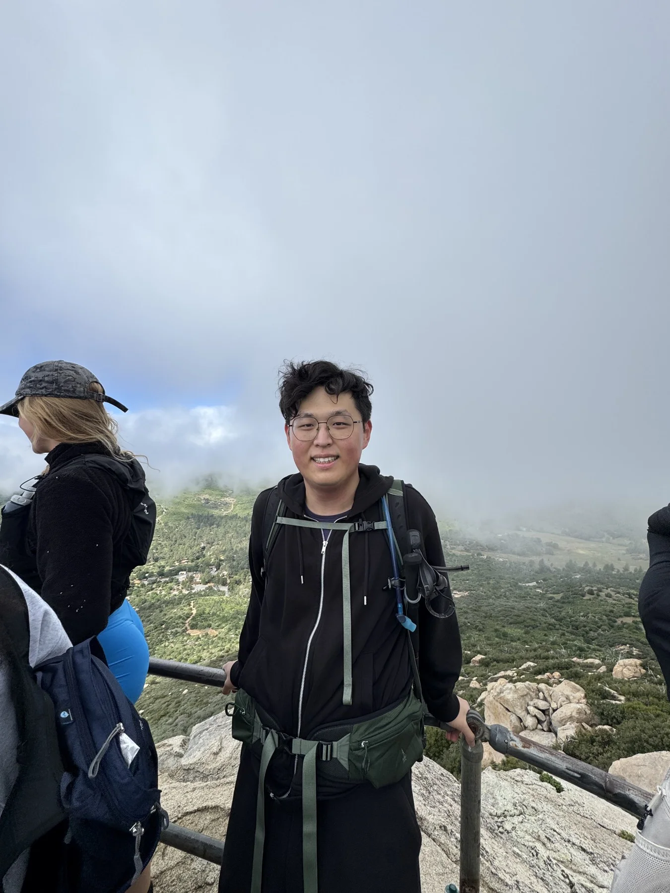
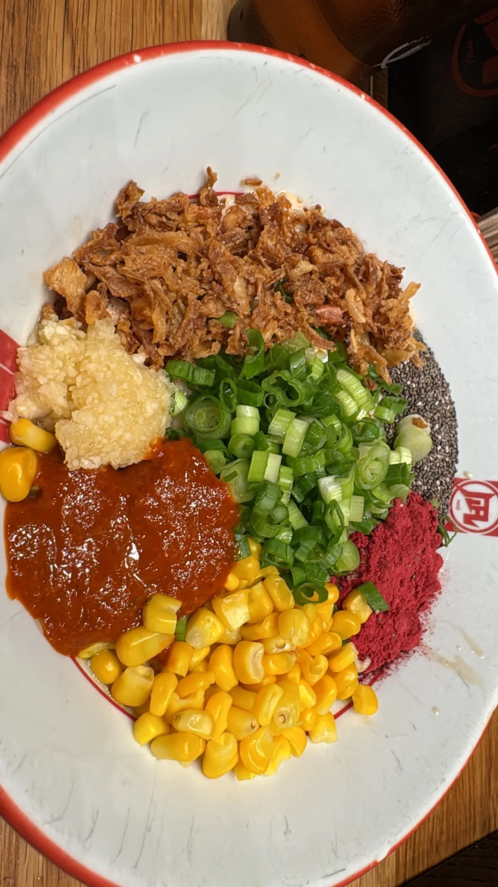
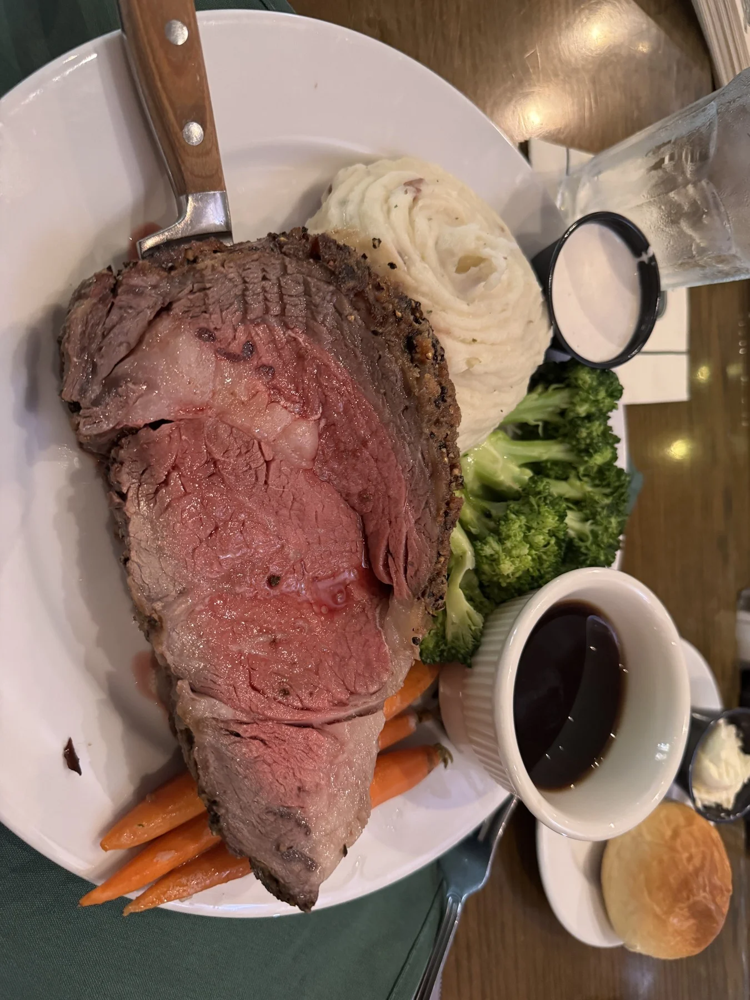
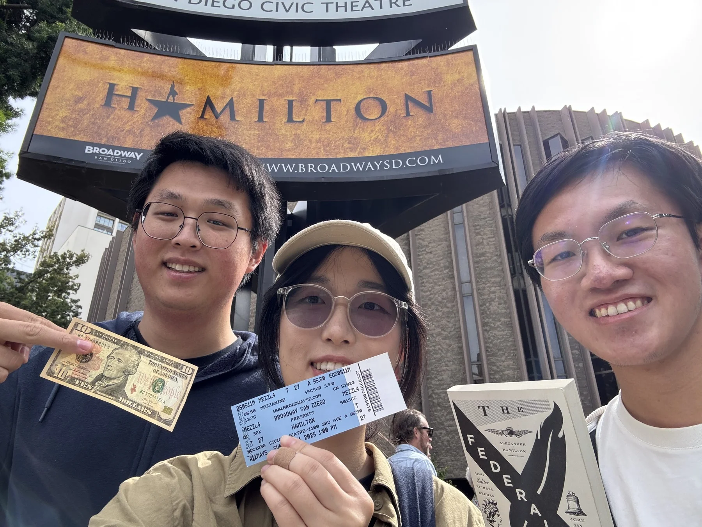
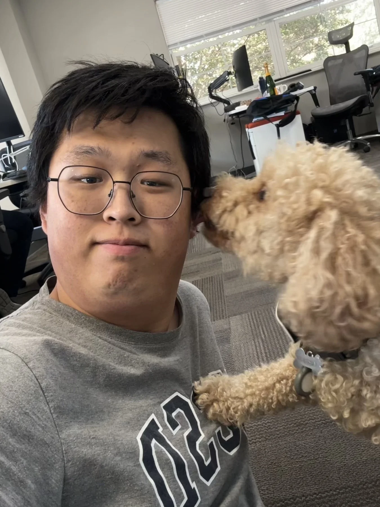

A small journal of life off-screen
Good trails. Good food. Better company.
Hey, I’m Hejia. This is a little corner of my life in San Diego — getting outside, finding something good to eat, and spending time with friends.
Come along
Some things worth leaving the house for.
Trails · tables · little moments01 / Outside
Taking the scenic route.
A few faces from the trail. The view is only half of it.




02 / At the table
And then, something to eat.
Another reason to get everyone together.


The other kind of exploring
A new trail. A full plate. A pretty good day.
Room for a few more food memories.

03 / In between
The little things, too.
Not every good day needs a mountain.




That’s a little bit of me
More walks.
More meals.
More memories.